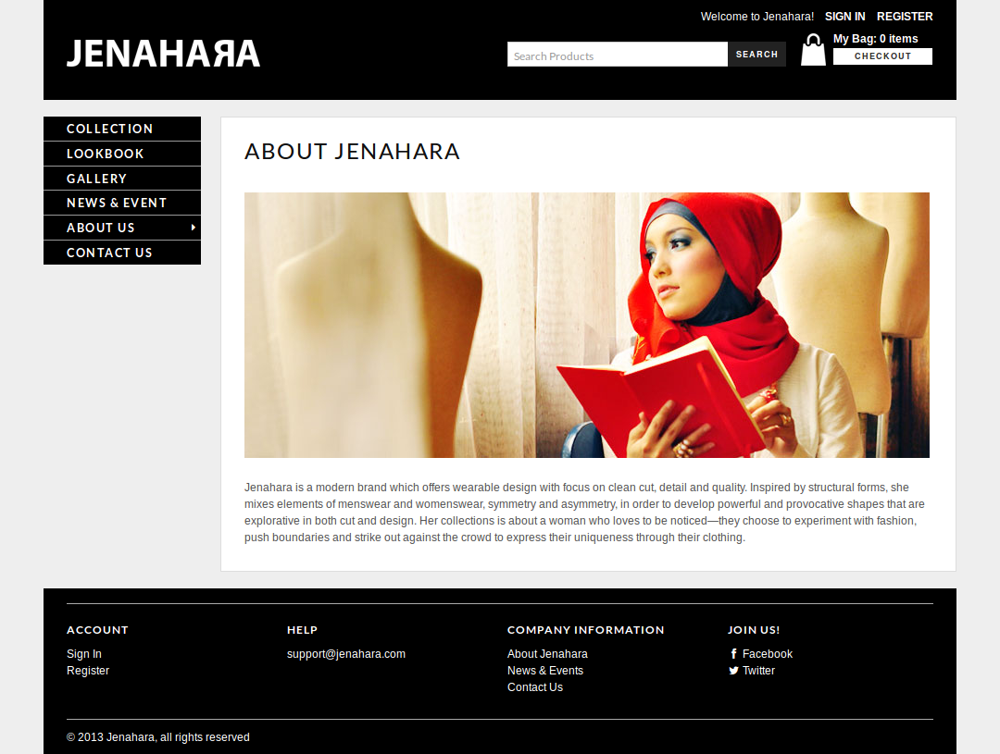

Jenahara Store
Jenahara is one of the biggest tenant in HijUp.com. They would like to improve their online presence by opening their own online store. Instead of making their own, we offered them to use Hipster Penguin.
I was responsible for developing the front-end of Jenahara store. Basically it is not much different from HijUp. So I just brought the structure I have made in HijUp and put a different style on top of it.
